PostgreSQL Unit 1 - PostgreSQL Installation and Database Setup
Στο σημερινό δωρεάν μάθημα PostgreSQL θα δούμε όλα τα απαραίτητα βήματα εγκατάστασης της PostgreSQL, θα δημιουργήσουμε μια καινούργια βάση και πίνακες και θα εισάγουμε δεδομένα έτσι ώστε να μπορούμε από την επόμενη ενότητα να εξετάσουμε τις query εντολές.
Για αρχή, θα πρέπει να μεταβούμε στο https://www.postgresql.org/download/windows/ και να πατήσουμε επάνω στο “Download the installer” link. Η διαδικασία αυτή είναι μόνο για εγκατάσταση σε Windows λειτουργικό.
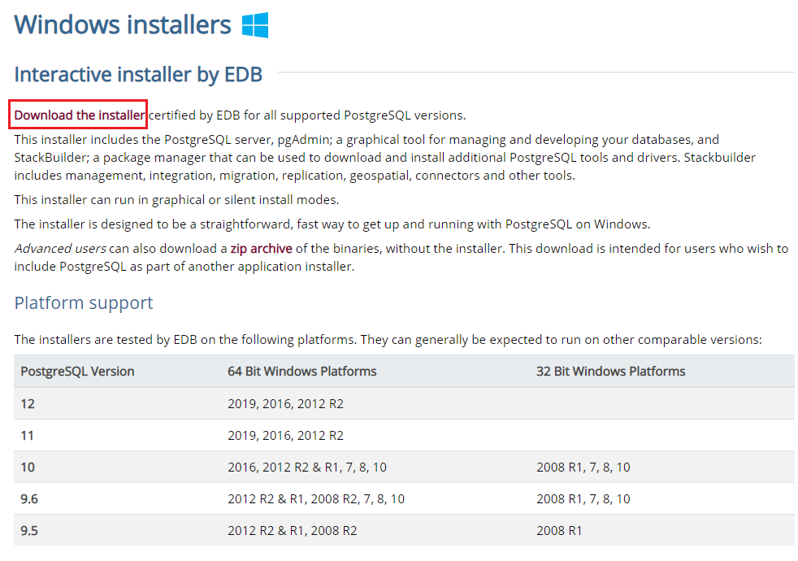Αμέσως μετά θα μεταφερθούμε στην εξής download σελίδα:
https://www.enterprisedb.com/downloads/postgres-postgresql-downloads
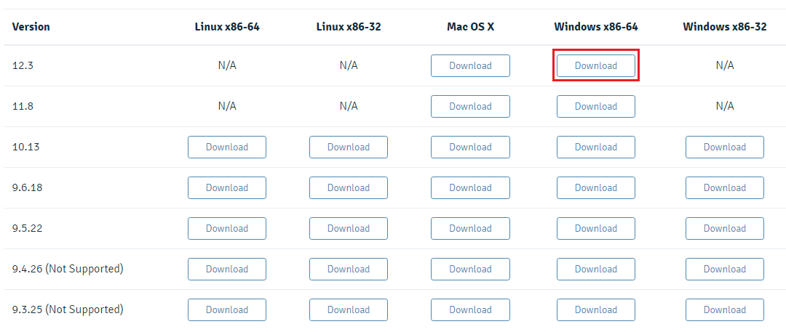Αν το λειτουργικό σας σύστημα υποστηρίζει 64bit εφαρμογές, τότε επιλέξτε το Windows x86-64 για την έκδοση 12.3 και περιμένετε να ολοκληρωθεί το download. Το αρχείο που θα κατέβει είναι γύρω στα 195MB.
Κάνουμε double-click επάνω στο αρχείο που κατεβάσαμε για να ξεκινήσουμε την διαδικασία της εγκατάστασης. Πατάμε Next στο παράθυρο Setup- PostgreSQL που θα εμφανιστεί.
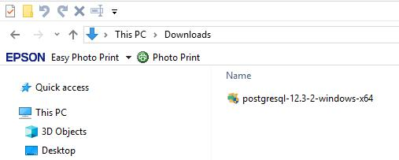 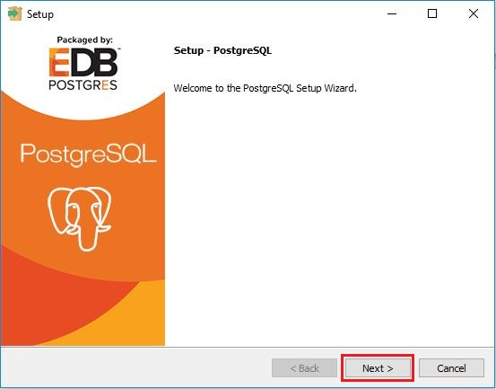Στο παράθυρο Installation Directory μπορείτε να δεχτείτε το προτεινόμενο directory για να την εγκατάσταση της PostgreSQL ή να το αλλάξετε. Στο δικό μας παράδειγμα, απλά θα δεχτούμε το προτεινόμενο installation directory και θα πατήσουμε Next.
Αμέσως μετά θα εμφανιστεί το παράθυρο Select Components μέσα από το οποίο επιλέγουμε αν θέλουμε να εγκαταστήσουμε την PostgreSQL με όλα τα συνοδευτικά προγράμματα ή όχι. Θα τα χρησιμοποιήσουμε σχεδόν όλα αυτά τα components κατά την ανάπτυξη των ενοτήτων οπότε τα αφήνουμε όλα τσεκαρισμένα και πατάμε Next.
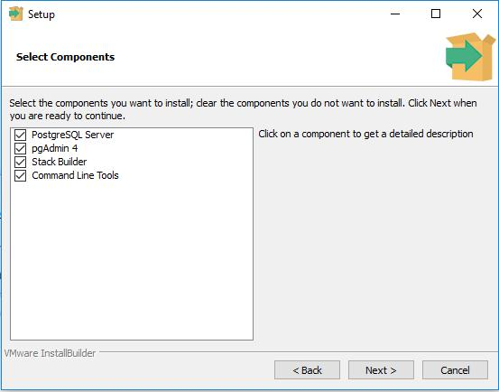Μια από τις τελευταίες επιλογές που πρέπει να δεχτούμε κατά την εγκατάσταση (ή να την αλλάξουμε) είναι σε ποιο directory θα αποθηκεύονται τα δεδομένα των βάσεων που θα δημιουργήσουμε. Για τα παραδείγματα μας, μπορούμε να δεχτούμε και αυτή την πρόταση. Σε παραγωγικό περιβάλλον όμως καλό είναι τα αρχεία τα οποία περιέχουν τα δεδομένα μας να βρίσκονται σε διαφορετικό drive όχι μόνο για να αυξήσουμε την απόδοση της βάσης αλλά και για να είναι ανώδυνη η επαναφορά των δεδομένων σε περίπτωση που τα χάσουμε. Θα μπούμε σε περισσότερες λεπτομέρειες σε μελλοντικές ενότητες. Για τώρα απλά δεχόμαστε το directory που μας προτείνει η PostgreSQL στο παράθυρο Data Directory και πατάμε Next.
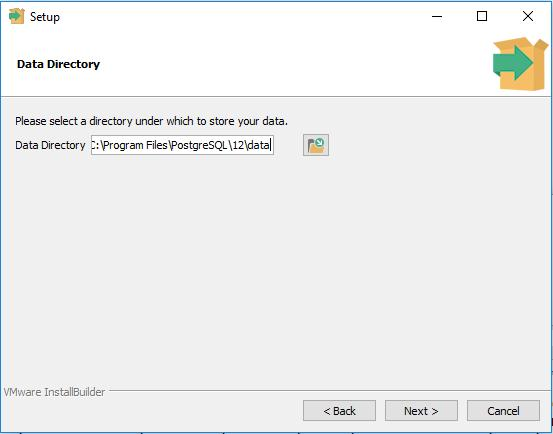Στο παράθυρο Password πρέπει να δηλώσουμε ένα password για τον super χρήστη που έχει το όνομα postgres. Με αυτό το username και το password θα μπορείτε να ενωθείτε στην PostgreSQL μέσα από γραφικές κονσόλες διαχείρισης βάσεων (όπως η pgAdmin 4) ή μέσα από κώδικα όπως java ή python. Επειδή αυτός ο χρήστης έχει όλα τα δικαιώματα επάνω στην βάση, συνήθως σε παραγωγικό περιβάλλον δημιουργούμε και έναν δεύτερο χρήστη με λιγότερα δικαιώματα. Δεν είναι ανάγκη να δηλώσετε κάποιο πολύπλοκο password αν και εφόσον θα χρησιμοποιήσετε την βάση για κώδικα που αναπτύσσετε στον προσωπικό σας υπολογιστή. Ας δώσουμε λοιπόν τον password 123456 για να μπορούμε να το θυμόμαστε όποια στιγμή και αν το χρειαστούμε. Δηλώνουμε λοιπόν το password που αποφασίσαμε και στα δύο πεδία και πατάμε Next.
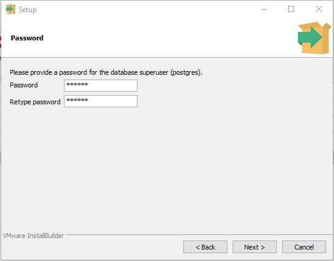Στο παράθυρο Port πρέπει να δεχτούμε ή το προτεινόμενο port ή να δηλώσουμε ένα καινούργιο που στα σίγουρα δεν χρησιμοποιείται από κάποια εφαρμογή. Συνήθως αφήνουμε τον αριθμό αυτό ως έχει αφού, εκτός ότι είναι ο γνωστός αριθμός port για να επικοινωνήσουμε με την PostgreSQL , δεν υπάρχει καμία άλλη γνωστή εφαρμογή που να χρησιμοποιεί αυτό το port. Δεχόμαστε λοιπόν το 5432 και πατάμε Next.
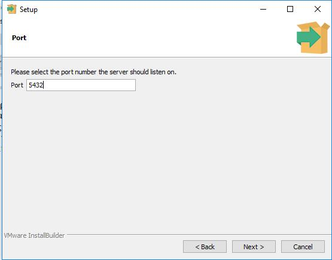Στο παράθυρο Advanced Options, αν και εφόσον θα χρησιμοποιήσετε διαφορετική γλώσσα από τα αγγλικά, μπορείτε να την επιλέξετε. Τι σημαίνει αυτό? Σημαίνει ότι με βάση το Locale που θα επιλέξουμε, θα γνωρίζει και η βάση τους αντίστοιχους κανόνες ταξινόμησης και μορφοποίησης αριθμών, χαρακτήρων γραμμάτων, κτλ. Τα δικά μας δεδομένα (αυτά που θα εισάγουμε λίγο παρακάτω) είναι όλα στα αγγλικά οπότε το default locale μας καλύπτει απόλυτα. Πατήστε Next.
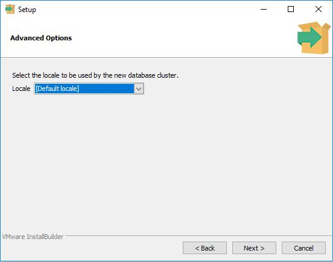Είμαστε έτοιμοι να ξεκινήσουμε την εγκατάσταση. Το παράθυρο Pre Installation Summary μας δείχνει όλες τις επιλογές μας από τα προηγούμενα παράθυρα και με βάση αυτές τις επιλογές θα προχωρήσει και η εγκατάσταση. Πατήστε Next.
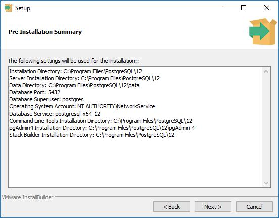Το Ready to Install παράθυρο είναι μια τελευταία επιβεβαίωση ότι συμφωνείτε με όλες τις επιλογές σας. Απλά πατήστε Next και η εγκατάσταση θα ξεκινήσει.
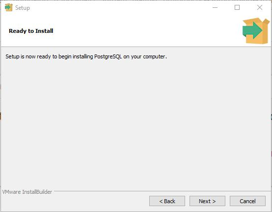Περιμένετε λίγα λεπτά μέχρι να ολοκληρωθεί η διαδικασία.
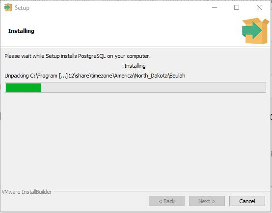Αφού ολοκληρωθεί η εγκατάσταση, θα μας ενημερώσει ένα τελευταίο παράθυρο όπου απλά εκεί πατάμε Finish. Μπορείτε να δεχτείτε την προεπιλεγμένη επιλογή του Stack Builder. Πατήστε Finish.
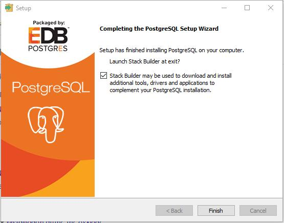Τώρα θα ξεκινήσει ένας σύντομος δεύτερος wizard που αναφέρεται σε επιπλέον έξτρα εργαλεία που ίσως επιθυμούμε να προσθέσουμε στην εγκατάσταση μας. Αυτός ο wizard εμφανίζεται επειδή επιλέξαμε ότι επιθυμούμε και τον Stack Builder. Αν δεν το είχαμε επιλέξει, δεν θα ξεκινούσε αυτός ο wizard. Ήθελα όμως να δείτε και τις υπόλοιπες επιλογές έτσι ώστε να μην έχετε καμία απορία και να έχετε μια ολοκληρωμένη εικόνα της εγκατάστασης.
Σε αυτό το πρώτο παράθυρο “Welcome to StackBuilder” επιλέξτε την εγκατάσταση της PostgreSQL που μόλις πραγματοποιήσατε και πατήστε Next.
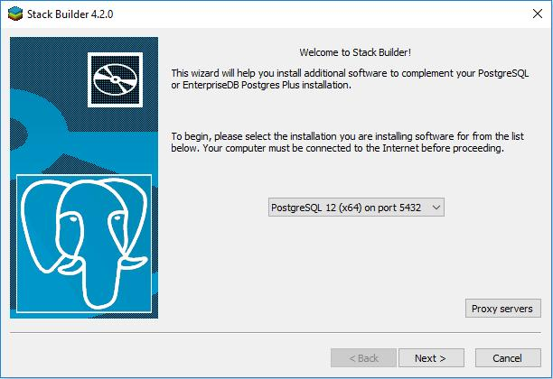
Το επόμενο παράθυρο είναι το πιο ενδιαφέρον. Μας παρουσιάζει μια λίστα με επιπλέον utilities, drivers, κτλ που ίσως επιθυμούμε να εγκαταστήσουμε τοπικά στον υπολογιστή μας. Για παράδειγμα αν πατήσετε στο Database Drivers μπορείτε να δείτε την λίστα με τους έξτρα drivers που μπορεί να κατεβάσει για εσάς ο Stack Builder. Αυτό είναι ένα χρήσιμο εργαλείο γιατί ανάλογα με την εφαρμογή που θα χρησιμοποιήσει την PostgreSQL θα μπορείτε να επιλέξετε και τον κατάλληλο driver με βάση την γλώσσα προγραμματισμού που χρησιμοποιήθηκε για την δημιουργία της εφαρμογής. Γενικότερα δεν θα χρειαστούμε κανένα από αυτά τα εργαλεία για τώρα. Όμως για να προχωρήσει ο Wizard θα χρειαστεί να επιλέξουμε έστω ένα εργαλείο. Για λόγους ευκολίας, επιλέξτε το pgJDBC driver και πατήστε Next.
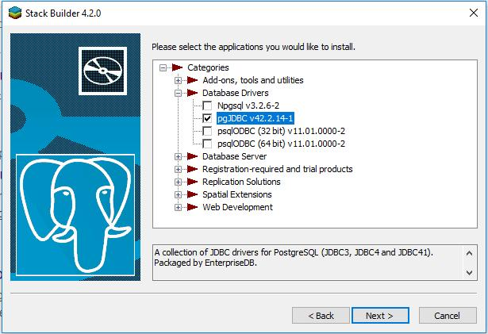
Το επόμενο παράθυρο απλά επιβεβαιώνουμε ότι θέλουμε να κατεβάσουμε τον java driver για την PostgreSQL. Επιλέξτε το download directory και πατήστε Next.
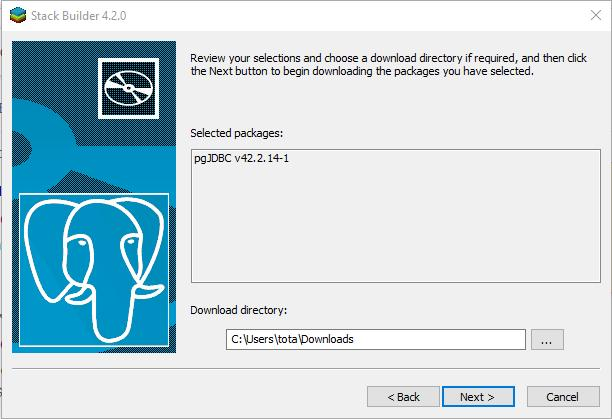
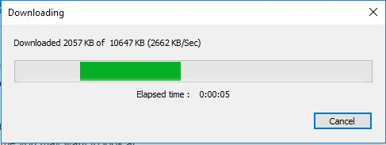
Όταν κατεβούν τα εργαλεία που έχουμε αποφασίσει τοπικά στον υπολογιστή μας, μπορούμε να πατήσουμε Next και να αφήσουμε το πρόγραμμα να μας τα εγκαταστήσει, ή να επιλέξουμε την επιλογή Skip Installation και να παρακάμψουμε την εγκατάσταση. Στο δικό μας παράδειγμα, ας αφήσουμε το Stack Builder να κάνει την εγκατάσταση (μην επιλέξετε το Skip Installation) έτσι ώστε να έχετε εικόνα το τι συμβαίνει στα επόμενα βήματα.
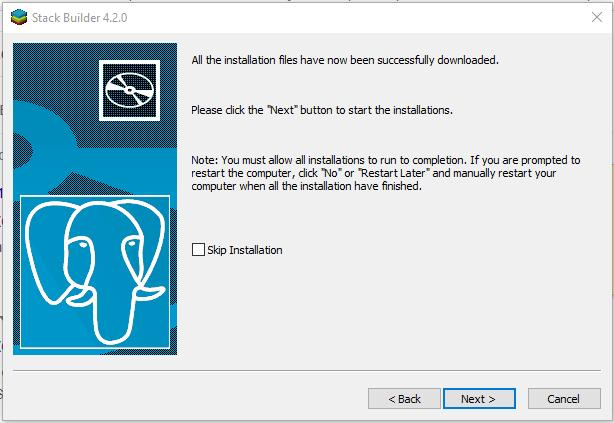
Ξεκινάει λοιπόν τώρα ο Wizard για να εγκαταστήσει το pgJDBC. Απλά πατήστε Next.
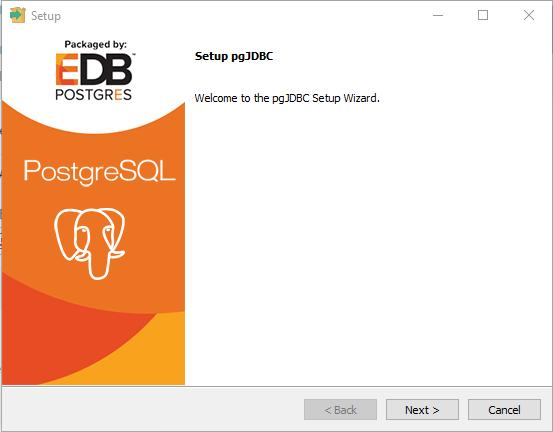
Δεχτείτε το Installation Directory που λογικά θα συμφωνεί με εκείνο που είχατε επιλέξει κατά την εγκατάσταση της PostgreSQL. Πατήστε Next.
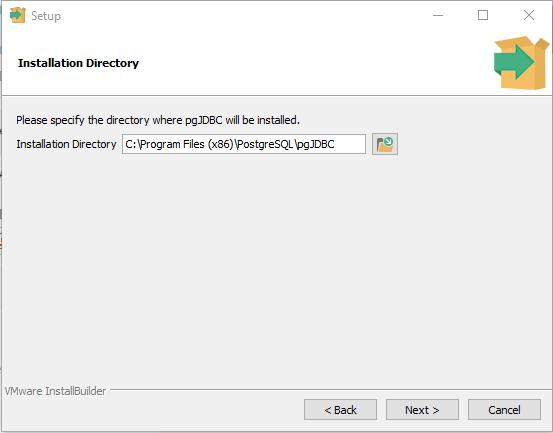
Δεν υπάρχουν πολλές επιλογές όταν εγκαθιστούμε έναν driver. Οπότε και σε αυτό το παράθυρο, είναι απλά ενημερωτικό, πατήστε Next.
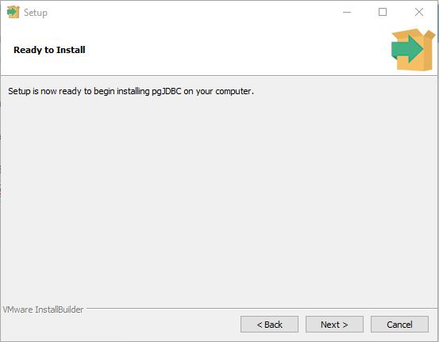
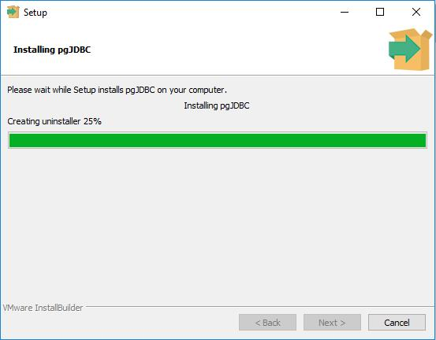
Πατήστε Finish στο παράθυρο που μας ενημερώνει ότι το pgJDBC εγκαταστάθηκε με επιτυχία.

Πατήστε Finish και στο Stack Builder.
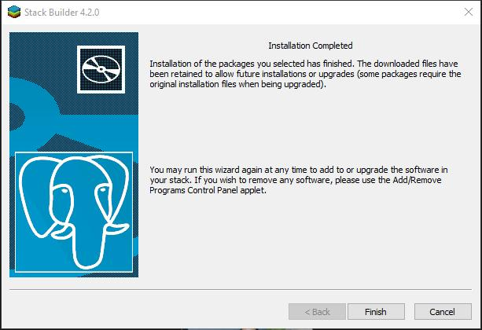
Φυσικά, αν οποιαδήποτε στιγμή χρειαστείτε να εγκαταστήσετε κάποιο ακόμα utility, μπορείτε ανά πάσα στιγμή να τρέξετε πάλι το Stack Builder.
Η PostgreSQL έχει εγκατασταθεί αλλά η PostgreSQL δεν είναι βάση δεδομένων, αλλά πρόγραμμα διαχείρισης βάσεων. Οπότε αυτό που πρέπει να κάνουμε σαν επόμενο βήμα είναι να δημιουργήσουμε μια βάση. Μπορούμε να το επιτύχουμε αυτό με δύο τρόπους: (α) με command εντολές από το terminal ή (β) με γραφικό τρόπο μέσα από το pgAdmin 4. Ας ακολουθήσουμε τον δεύτερο τρόπο.
Το pgAdmin 4 είναι μια κονσόλα διαχείρισης των βάσεων της PostgreSQL. Βασικά κάνει πολλά περισσότερα αλλά αυτή την στιγμή ενδιαφερόμαστε για το πως θα δημιουργήσουμε μια βάση. Ας ξεκινήσουμε το pgAdmin 4.
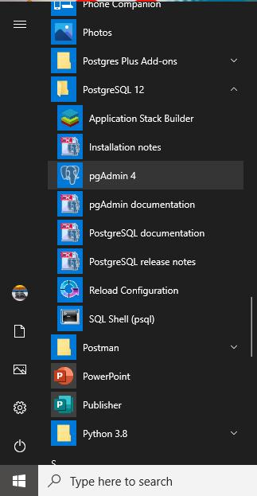
Αφού γράψουμε το password που είχαμε δηλώσει κατά την εγκατάσταση της PostgreSQL (123456), θα δούμε το εξής περιβάλλον:
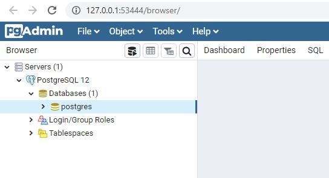
Η βάση postgres έχει δημιουργηθεί από την PostgreSQL για να έχουμε μια βάση να δημιουργήσουμε τους πίνακες μας και να εισάγουμε τα δεδομένα μας. Το όνομα προέρχεται από τον superuser postgres. Εμείς θα δημιουργήσουμε μια καινούργια βάση κάνοντας δεξί κλικ επάνω στο εικονίδιο databases και επιλέγοντας create → database.
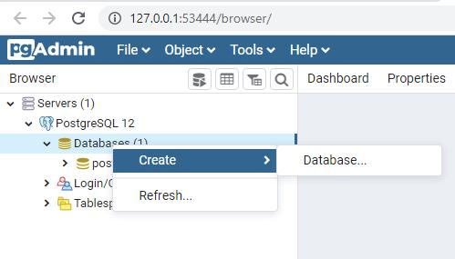
Το όνομα της βάσης θα είναι Northwind. Αφού το γράψατε πατήστε Save.

Τώρα που έχουμε την βάση θέλουμε να δημιουργήσουμε πίνακες και να εισάγουμε δεδομένα. Για αυτό τον σκοπό θα χρησιμοποιήσουμε μια βάση που είχε δημιουργήσει παλαιότερα η Microsoft για εκπαιδευτικούς σκοπούς και την είχε ονομάσει Northwind. Για να μεταφέρουμε αυτή την βάση σε postgreSQL περιβάλλον, θα χρειαστεί να πάμε στο gituhub όπου μια ομάδα από προγραμματιστές έφτιαξαν το SQL script να είναι συμβατό με την postgreSQL. Αυτό που πρέπει να κάνουμε εμείς είναι να κάνουμε copy όλο το northwind.sql script ή μπορείτε να το κατεβάσετε και να το κάνετε μετά copy.
https://github.com/pthom/northwind_psql
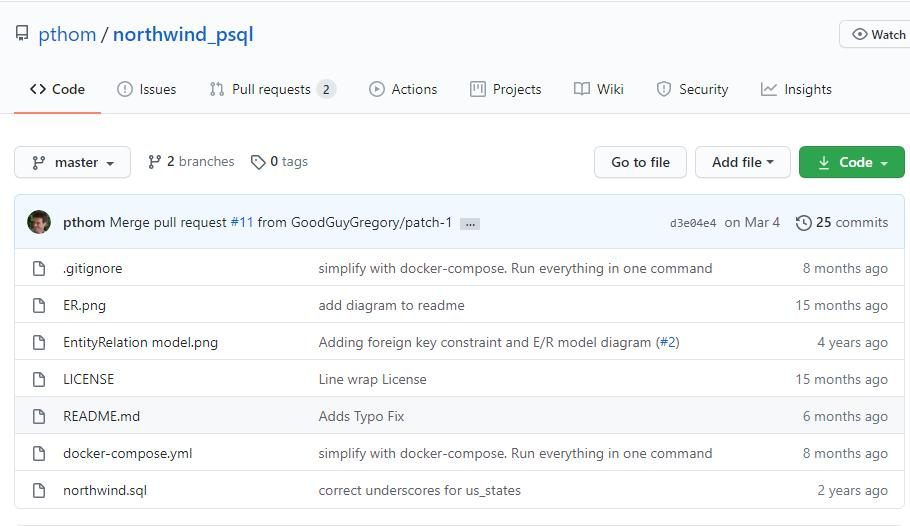
Αφού λοιπόν έχουμε κάνει copy το northwind.sql ερχόμαστε πίσω στο pgAdmin 4 περιβάλλον κάνουμε δεξί κλικ επάνω στην βάση Northwind και επιλέγουμε Query Tool.
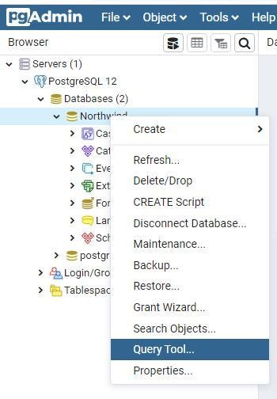
Μέσα στον Query Editor κάντε paste το Northwind.sql script. Πατήστε το execute εικονίδιο.
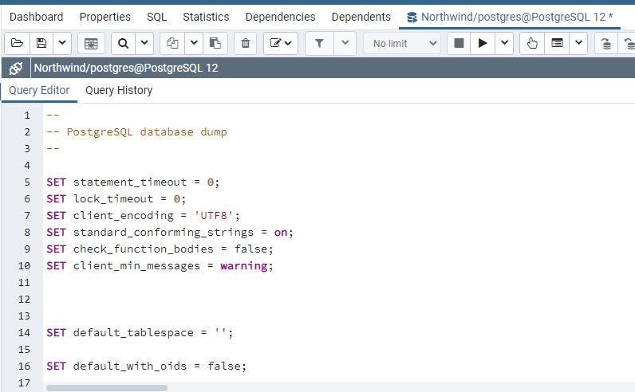
Αν τώρα ανοίξετε το Tables θα δείτε 14 πίνακες με δεδομένα.
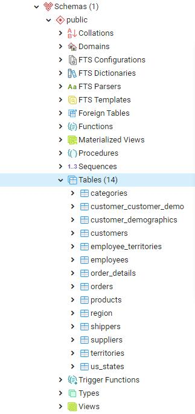
Θα μπορούσατε αντί να κάνετε copy-paste να κατεβάσετε το northwind.sql αρχείο από το github και μετά να το ανοίξετε μέσα από το pgAdmin 4. Ίσως αυτό θα ήταν ευκολότερο. Όμως με το copy-paste είχατε την ευκαιρία να ρίξετε μια γρήγορη ματιά στο SQL και να δείτε τα δεδομένα που περάσανε στους πίνακες.
Το τι ακριβώς δεδομένα αντιπροσωπεύει η Northwind θα το δούμε στην επόμενη ενότητα όταν ξεκινήσουμε να μιλάμε για απλά select statements. Για τώρα απλά κρατάμε το γεγονός ότι έχουμε μια βάση με το όνομα Northwind που περιέχει πίνακες με δεδομένα.